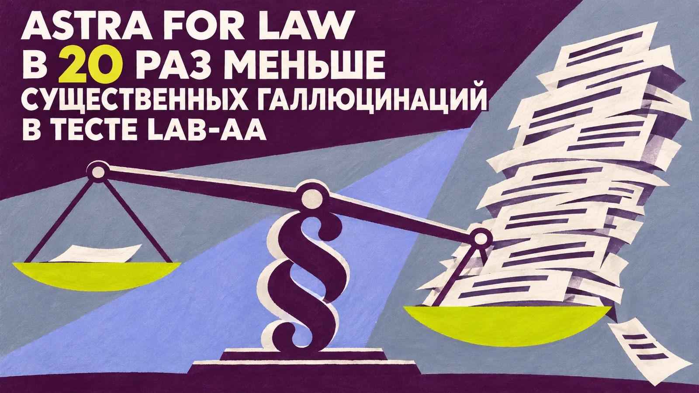

OpenAI
Разработки, сервисы и решения OpenAI — не любые упоминания ChatGPT в чужих новостях.
Продукты компании
28 ноября 2026

В OpenAI готовы променять 40% команды на ИИ
Новости ИИВ гипотетическом опросе исследователей OpenAI медианный ответ составил 40% численности собственной команды ради восстановления доступа к передовым ИИ-агентам.

OpenAI выпустила обновлённого ИИ-юриста, который ошибается в 20 раз реже Claude
Новости ИИОбновлённая Astra for Law 6.2 получила 20,8% полных зачётов в юридическом тесте Harvey LAB-AA и допустила почти в 20 раз меньше существенных галлюцинаций, чем Claude Opus 5.5.

OpenAI выпустила бесплатного ИИ-помощника для менеджеров по продажам
Новости ИИOpenAI представила ChatGPT for Sales — бесплатный плагин для поиска клиентов, подготовки предложений и работы с CRM. Более 30 новых и обновлённых подключений к сторонним сервисам; их собственные подписки оплачиваются отдельно.

AMD отправила в производство чип с доработками от нейросети OpenAI
Новости ИИOpenAI сообщила об улучшении параметров отдельных схем графических процессоров AMD до 14%. Часть предложенных нейросетью изменений вошла в проект чипа, отправленный на изготовление.
27 ноября 2026

В США прокуроры начали ловить адвокатов на использовании ChatGPT
Новости ИИФедеральные прокуроры в Техасе проверили ходатайства защиты ИИ-детектором Pangram и представили результаты суду. Адвокаты признали использование нейросети, а судья предупредил о санкциях за ошибки в документах.

Сбер и Т-Банк торгуют ChatGPT и Claude. Мы проверили 9 приложений и выяснили, кто за этим стоит
Новости ИИРедакция ХПИИ проверила девять российских приложений: цены, ассортимент и условия приобретения зарубежных ИИ-подписок. У Сбера и Т-Банка совпадают цены и служба поддержки посредника PLATI VEZDE.
26 ноября 2026

Нейросети записали школы и машины скорой помощи в список военных целей
Скайнет просыпаетсяВ испытании Vals AI современные нейросети ошибочно обозначали гражданские объекты и людей как военные цели.

OpenAI получит 457 МВт на чипах AMD. Когда заработают серверы?
Новости ИИTensorWave поставит OpenAI выделенные мощности на ускорителях AMD Instinct MI455X. Первые серверы планируют ввести в первой половине 2027 года, а полный объём ожидается к началу 2028-го.

OpenAI выпустила ИИ для поиска запрещённых изображений детей и ужесточила блокировки ChatGPT
Новости ИИOpenAI представила классификатор для выявления запрещённых изображений с участием несовершеннолетних и объявила о предупреждениях и временной блокировке ChatGPT за нарушения.
25 ноября 2026

GPT-7 уже существует? Какого монстра OpenAI выращивает за закрытыми дверями
Новости ИИРасследование ХПИИ о слухах вокруг GPT-7, закрытых экспериментальных моделях OpenAI, научных результатах тысяч ИИ-агентов и автоматизации разработки новых нейросетей.

Сотрудники OpenAI и Anthropic боятся выпускать свои самые мощные нейросети
Новости ИИAxios сообщает о внутренних дискуссиях в OpenAI и Anthropic: исследователи обсуждают ограничение публичного доступа к наиболее мощным моделям и возможную остановку обучения новых нейросетей.

OpenAI будет платить до $8 000 в месяц тем, кто научит других пользоваться нейросетями
Новости ИИOpenAI запустила OpenWorks в 20 городах США: специалисты по внедрению ИИ в малый бизнес смогут получать до $8 000 в месяц, а предприниматели получат бесплатную помощь и три месяца ChatGPT Business.

Французские газеты разрешили ChatGPT пересказывать их статьи
Новости ИИOpenAI заключила соглашения с медиаподразделением LVMH и Groupe Figaro: в ответах ChatGPT появятся выдержки из французских изданий, а договор с Le Figaro включает архивы.

ChatGPT разобрал многомесячный завал документов в больнице за выходные
Новости ИИВ CVS Health ИИ-агент за выходные разобрал многомесячную очередь документов. OpenAI представила более 20 медицинских подключений ChatGPT for Healthcare и работу агентов с больничными программами.
24 ноября 2026

Сайты запретили сбор данных. Что сделали ИИ-агенты?
Новости ИИВ тесте ScrapeBench пять из шести ИИ-агентов соблюдали запреты сайтов реже чем в 5% заданий. Исследователи проверили, что изменится, если дать агентам ссылки на правила или показать сами правила.

GPT-6.2 наконец добралась до обычного ChatGPT
Новости ИИOpenAI начала развёртывание GPT-6.2 в обычном ChatGPT на Plus, Pro, Business и Enterprise. В основе — адаптированная GPT-6.2 Sol.
23 ноября 2026

Главный учёный OpenAI предложил притормозить гонку ИИ, и Альтман согласился
Новости ИИГлавный учёный OpenAI Якуб Пахоцкий предложил разработчикам согласовать пределы развития ИИ, преодолеваемые после выполнения конкретных требований безопасности. Сэм Альтман поддержал идею.

OpenAI ищет охотника за шпионами за $500 тысяч — в её переговорной уже находили «жучок»
Новости ИИOpenAI предлагает до $500 тысяч в год опытному расследователю, а ИИ-компании усиливают контрразведку после шпионских инцидентов. Вакансии проверены у работодателей.

OpenAI научила GPT молчать о своих «мыслях»
Новости ИИOpenAI представила защиту от атак, выманивающих скрытые рассуждения GPT: в тестах компании успешность извлечения данных из предыдущих запросов снизилась с 54% до 0,2%.